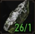

Filtros ativos: Todas as partes presentes, Partes faltando
BESTA
BOTAS |3|
CALÇAS |5|
COMPONENTE DE FABRICAÇÃO |26|
ESPADA DE PRATA |2|
ESPADA DE AÇO |7|
MANOPLAS |5|
PORCARIA |1|
VIROTE DE BESTA |1|
INGREDIENTES NECESSÁRIOS

Os itens devem ser melhorados até o nível grão-mestre para desbloquar os bônus.
BÔNUS DE EQUIPAMENTO DE BRUXO:
Bônus de 3 peças:
Ataques fortes aumentam o dano de ataques rápidos por 5 segundos em 10% para cada peça do conjunto. Bônus atual: 0%.
Bônus de 6 peças:
Ataques pelas costas causam 50% a mais de dano e também podem atordoar oponentes ao custo de 1 ponto(s) de adrenalina.
Apenas ferreiros podem forjar armas e apenas armeiros podem fazer armaduras. Procure por ícones indicando suas localizações no mapa ou minimapa.
Q
Marcar
Tamanho da descrição
F
Filtros
BESTA FELINA
BESTA
Um projétil conveniente e resistente.
+10
Perfura armaduras
^ +10
+225 %
Poder de ataque
^ +225 %
+2 %
Ganho de adrenalina
^ +2 %
+2 %
Chance de acerto crítico
^ +2 %
+15 %
Experiência adicional contra
monstros
^ +15 %
EQUIPAMENTO DO BRUXO
Peso 0.01
Nível necessário 29
Requisitos de artesão
Ferreiro/Experiente